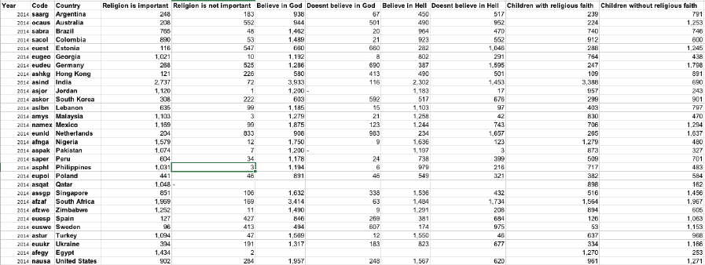
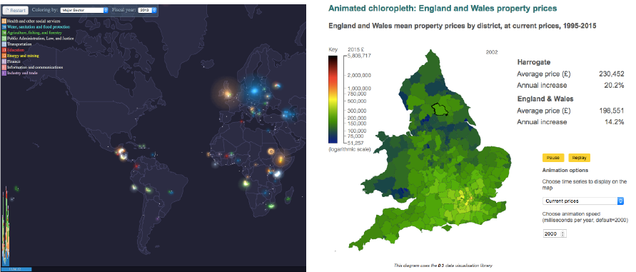
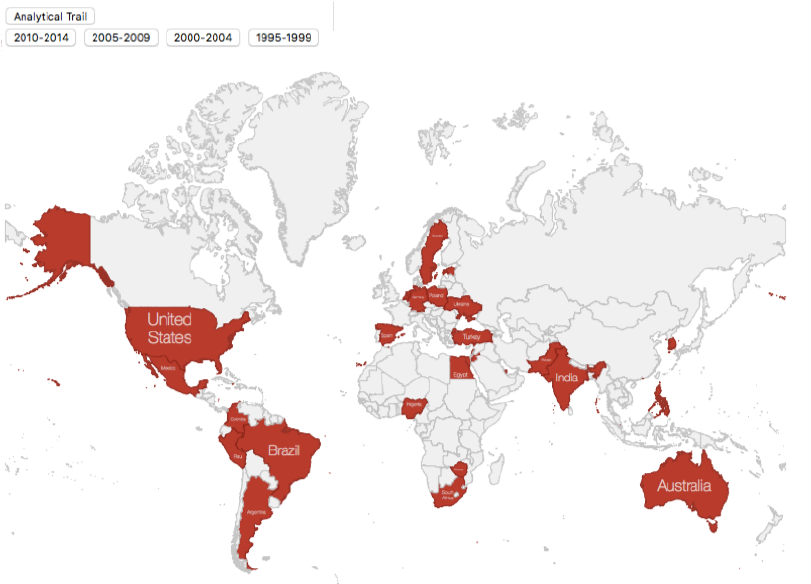
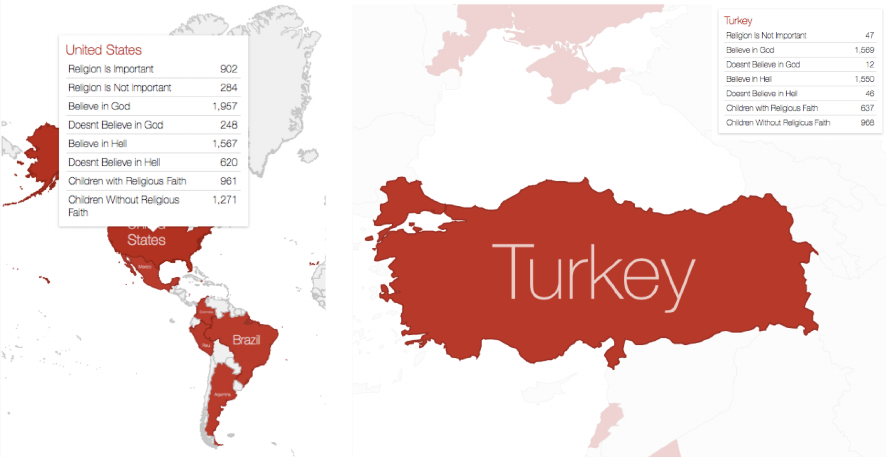

1
Analytic Trail 1: Understanding the data
The first and hardest part of this assignment was to navigate through the available data and
to understand it. There were multiple wave periods where the user can see all the variable
results of the surveys for each country (Figure 1). They showed the survey questions in a list
and tree form (Figure 2), which was a bit hard to visually understand properly, as going back
from each question to see the next one was a bit of an annoying task. Once the wave,
countries and the questions are selected, the data is shown as tables (Figure 3) or graphs as
per the user need. It was a challenge to choose the necessary data, export them and
organize it in excel (Figure 4). For this particular scenario, I focused on one section alone:
Religion.
Figure 1: Landing page of the site for getting data

2
Figure 2: Tree form structure of survey questions
Figure 3: Provided data in tabular format

3
Figure 4: Organized data on wave 1 for each variable

4
Analytic Trail 2: Visualizing the data
Once the data was sorted, it was easy to start thinking about how to visualize it. Exploring
multiple related works (Figure 5) helped in forming a basic idea as to how you want to
present the data. From the beginning itself, a map was on my mind the whole time, as it
made me feel that an interactive world map would be something that can be very relatable
to and also interesting to all kinds of users. One main thing found in the earlier visualization
was that to get the data, user needs to go through multiple steps to get the values. So, I
wanted to give the users all the main data on very minimal number of clicks.
Figure 5: Related works for inspiration

5
Result and Lesson Learned
Finally using d3js GeoMap structure, I created visualization for the data (Figure 6). There are
buttons for different wave periods and the map changes as per the selection. While hovering
over countries, you can get all the data for that particular country for that particular wave
period (Figure7). While clicking any country on the map, it zooms in and you can see that
particular country and all the data on the side of the map as well (Figure 7).
The main lesson learned was coding (for me personally), this was my first time in
experimenting with coding. Hence it was quiet challenging yet learned a lot. Mistakes were
bound to happen as the data was of huge amount. Learned to be a strict and careful
observer and as the saying says, slow and steady wins the race.
Figure 6: Visualization of data

6
Figure 7: All the data available in the interactive map.